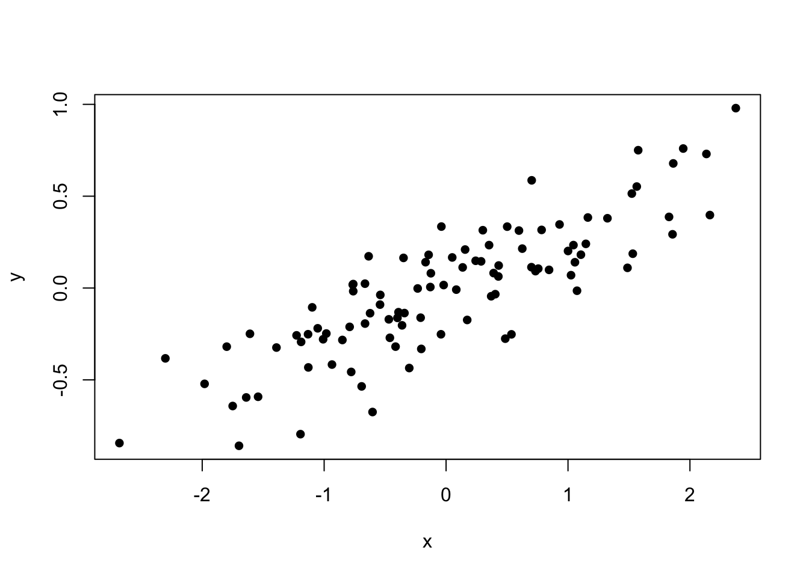

Open R and type 2 + 2. R tells you that the answer is 4. Congrats! You are now using R. This is the most basic way to interact with the interpreter. Later we will see how you can save a complicated series of commands to a script file and execute them automatically.
Sometimes it is useful to assign the results of computations to a named variable that we will use later. We can create a named variable using the <- assignment operator. For instance, we can do the following. Note It is technically possible to use the = symbol for assignment, but this is bad practice, as it causes problems down the line. Get used to typing the <- symbol.
myVariable <- 2 + 2Now the result from this computation is assigned to myVariable and saved for later use. Later, we can call this variable like so:
myVariable * myVariable## [1] 16A vector is a series of values stored in a single object. You can create a vector using the c() function (c stands for combine). Note: you can only store a single type of data in a vector (e.g. numeric or character data).
vector1 <- c(1,2,3,4,5,6,7,8,9,10)
vector2 <- c(11,12,13,14,15,16,17,18,19,20)
vector_this_will_be_text <- c(21,22,23,24,25,26,27,28,29,"thirty")Vectors are very powerful, because many of the basic functions and operations in R are vectorized, meaning that they operate on all elements of a vector in sequence. For example, to add the elements of vector1 with the corresponding elements in vector2, you simply add the vectors, because the + function is vectorized. You can assume that most of the base functions in R are vectorized. This is one of the fundamental advantages of R.
vector1 + vector2## [1] 12 14 16 18 20 22 24 26 28 30Vectors can be indexed with brackets [] to get a subset of values. What value do you get by typing vector2[3] in the interpreter? What about vector2[3:5]? HINT: the : operator makes a sequence of integers.
Extract the first, fifth, and ninth element of vector2 that you created earlier.
When you use negative indices, then the referenced elements are removed from the resulting vector.
Remove the 1st, 5th and 9th elements from vector2
Logical tests are assertions that R evaluates as either TRUE or FALSE. For instance, you might assert that “1 plus 1 equals 10 minus 8”? In R that looks like:
1 + 1 == 10 - 8## [1] TRUER tells us that this is TRUE. Note the double equals symbol, which means something different than a single equals symbol. The logical operators are:
== is equal to!= does not equal> greater than< less than>= greater than or equal to<= less than or equal toLike most things in R, logical tests work on vectors. Remember vector2 from before? Lets find out which values are greater than 17.
vector2 > 17## [1] FALSE FALSE FALSE FALSE FALSE FALSE FALSE TRUE TRUE TRUEThis becomes useful when you only want a subset of values from a vector using logical indexing. To get only the values of vector2 that are greater than 17, we can use a logical (AKA boolean) vector.
vector2[vector2 > 17]## [1] 18 19 20You can also pass complicated logical tests using the AND operator & or the logical OR operator |
vector2[vector2 > 17 & vector2 < 20]## [1] 18 19vector2[vector2 > 17 | vector2 == 13]## [1] 13 18 19 20Indexing is not just useful for extracting elements from a vector. You can also use the assignment operator <- to replace particular elements in a vector. Consider these examples:
primates <- c("lemur", "gibbon", "langur", "gibbon", "gorilla")
primates## [1] "lemur" "gibbon" "langur" "gibbon" "gorilla"primates[3] <- "bushbaby"
primates## [1] "lemur" "gibbon" "bushbaby" "gibbon" "gorilla"primates[primates == "gorilla"] <- "chimpanzee"
primates## [1] "lemur" "gibbon" "bushbaby" "gibbon" "chimpanzee"A factor is a special type of vector for storing categorical data. For instance, we might create a factor of different pets:
pets <- factor(c("cat", "cat", "dog", "pony", "dog", "dog"))
pets## [1] cat cat dog pony dog dog
## Levels: cat dog ponyR will now treat this differently from other vectors. These come in useful later on, when we want to summarize by different factor levels.
By default, R assumes the order of the levels in your factor is arbitrary, so it displays them in alphabetical order.
You can change this by replacing the normal factor pets with a new ordered factor
pets <- ordered(pets, levels=c("pony", "dog", "cat"))
pets## [1] cat cat dog pony dog dog
## Levels: pony < dog < catData frames are a convenient way of storing multiple related vectors of data together in a single object. They are analogous to a spreadsheet where each row corresponds to an individual (e.g., specimen, species) and each row corresponds to some observation about that individual. Usually, you will use the read.table() function to read a dataframe directly from a .csv or .txt file that you have saved from MS Excel.
Using the built in dataframe iris, you can explore how to access data within a dataframe. The most common ways are with the $ syntax and with the [row,column] syntax. $ is used to access a named column within an dataframe. The [row, column] syntax is used to identify the index number of the row and column desired. Note that leaving a blank indicates ALL rows or columns. So iris$Species is the same as iris[,5].
#first few rows of iris
head(iris)## Sepal.Length Sepal.Width Petal.Length Petal.Width Species
## 1 5.1 3.5 1.4 0.2 setosa
## 2 4.9 3.0 1.4 0.2 setosa
## 3 4.7 3.2 1.3 0.2 setosa
## 4 4.6 3.1 1.5 0.2 setosa
## 5 5.0 3.6 1.4 0.2 setosa
## 6 5.4 3.9 1.7 0.4 setosa#get the Sepal.Length column
iris$Sepal.Length## [1] 5.1 4.9 4.7 4.6 5.0 5.4 4.6 5.0 4.4 4.9 5.4 4.8 4.8 4.3 5.8 5.7 5.4
## [18] 5.1 5.7 5.1 5.4 5.1 4.6 5.1 4.8 5.0 5.0 5.2 5.2 4.7 4.8 5.4 5.2 5.5
## [35] 4.9 5.0 5.5 4.9 4.4 5.1 5.0 4.5 4.4 5.0 5.1 4.8 5.1 4.6 5.3 5.0 7.0
## [52] 6.4 6.9 5.5 6.5 5.7 6.3 4.9 6.6 5.2 5.0 5.9 6.0 6.1 5.6 6.7 5.6 5.8
## [69] 6.2 5.6 5.9 6.1 6.3 6.1 6.4 6.6 6.8 6.7 6.0 5.7 5.5 5.5 5.8 6.0 5.4
## [86] 6.0 6.7 6.3 5.6 5.5 5.5 6.1 5.8 5.0 5.6 5.7 5.7 6.2 5.1 5.7 6.3 5.8
## [103] 7.1 6.3 6.5 7.6 4.9 7.3 6.7 7.2 6.5 6.4 6.8 5.7 5.8 6.4 6.5 7.7 7.7
## [120] 6.0 6.9 5.6 7.7 6.3 6.7 7.2 6.2 6.1 6.4 7.2 7.4 7.9 6.4 6.3 6.1 7.7
## [137] 6.3 6.4 6.0 6.9 6.7 6.9 5.8 6.8 6.7 6.7 6.3 6.5 6.2 5.9#get the value in the first row, third column
iris[1,3]## [1] 1.4#get the whole first row
iris[1, ]## Sepal.Length Sepal.Width Petal.Length Petal.Width Species
## 1 5.1 3.5 1.4 0.2 setosaNote You can also create new columns in a dataframe using the $ operator. So we can create a new column in the iris data frame called petal area like so:
iris$Petal.Area <- iris$Petal.Length * iris$Petal.WidthFunctions are the heart of R. A function is just a series of commands that is assigned a name. Functions accept arguments, perform a series of commands using the argument values, then return a single object. You can create your own functions (and you will!) but there are many hundreds of pre-defined functions available for your use. A huge part of the learning curve of R is learning which functions exist, which is why they invented google.com!
You call a function by typing its name, followed by parentheses containing any arguments necessary. Arguments are the way you pass data and/or options to a function. For example, the paste() function simply pastes together any arguments you provide into a single text string.
part1 <- "The quick brown fox"
part2 <- "jumped over the lazy dog."
paste(part1, part2)## [1] "The quick brown fox jumped over the lazy dog."Note: You can see all the arguments and default values for any function using the ? operator like this ?NameOfFunction.
Typing commands interactively into the command-line interpreter is fine for experimentation, but ultimately we want to save every single command to a text file, so that this can be run later, shared with collaborators, or published online with the article as supplementary information. This element of reproducibility is a critical benefit of doing scripted data analysis. In Rstudio, you can create a new script by using the File >> New File menu.
numbers that contains the numbers 1 through 100. Hint use the ? operator to investigate the seq function or explore the : operator.numbers that are greater than 36. Save this to a variable called bignumbersbignumbers.bignumbers using the hist() functionR Markdown documents are like scripts, but better. Instead of creating regular .R script files, you create a special type of file called an R markdown file, which allows you to mix human readable text with snippets of R code. At any time you can “knit” the R Markdown file, which causes the code snippets to be run. Any results (figures or text output) get combined with the human readable parts, and combined into a single pdf, word doc, or html file. You can create a new Rmarkdown using the File >> New File menu.
This sentence is just normal text, made for humans to read. The following bit is a “code chunk”, which is set off by the ``` characters and consists of actual R code that gets run, and the results knitted back into the document. You can also put R code inline like this. What is 2 + 2? The answer is `r 2 + 2`.
```{r examplechunk}
x <- rnorm(100)
y <- (x * 0.3) + rnorm(100, sd=0.2)
plot(x,y,pch=16)
```
Here is some more human readable text right after the code chunk.
This sentence is just normal text, made for humans to read. The following bit is a “code chunk”, which is set off by the ``` characters and consists of actual R code that gets run, and the results knitted back into the document. You can also put R code inline like this. What is 2 + 2? The answer is 4.

Here is some more human readable text right after the code chunk.
One of the most important features of R is that it is has a vast ecosystem of user-contributed packages, which extend the base functionality of R. Packages can be installed from the command line install.packages('ggplot2') or by using the graphical package manager in Rstudio using the Tools > Install Packages menu. Each time you want to use functions from a package, you must make the package available with the library() function. E.g. library(ggplot2).
Getting data into R can be somewhat frustrating for new users. This is mainly because humans tend to be sloppy when collecting data in a spreadsheet. R has rigid expectations. It expects each column of a text file (usually exported from an Excel sheet) to have a single type of data (text, numeric, factor), plus an optional header row. That’s it. Period. No extra rows that are just for formatting and don’t contain data observations.
The primary function for reading data into R is the read.table() function. This function reads plain text files (.txt or .csv) and creates a dataframe in R from the resulting data. There are a variety of arguments to read.data(), the most important of which are:
file = The full path to the file on your computer as a text string. (Use the forward slash /, even on Windows.) You can also read from a remote URL like so: url("http://URLfordata.com")sep = the character that separates columns in your text file. The default is " ", which kind of sucks because most of our files will be separated by either \t or ,.header = Whether or not there is a header row in your text file. Defaults to FALSE, but usually we need it to be TRUE.Read in the file called “femur_lengths.txt” directly from the following URL “http://hompal-stats.wabarr.com/datasets/femur_lengths.txt”. Save to an object called femora.
Usually, I would recommend not writing out modified data frames to text files. It is far better to have a single input file, and to do all necessary manipulations in your saved R script file. But, if you have huge datasets or need to use another statistical program, it is sometimes necessary to save a dataframe outside of R as a text file. You can do this with write.table()
x = The name of the data frame to be saved.file = Path to the output file. You can’t use file.choose() though.quote = Do you want quotation marks around strings? Defaults to TRUEsep = Same as for read.table()row.names = Do you want row names? Defaults to TRUE, but usually you will set to FALSE/Add a new column of log transformed lengths to the femur length dataset and then write out the new file to the Desktop.